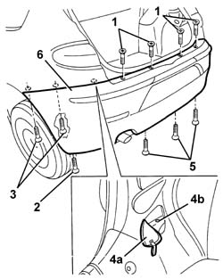
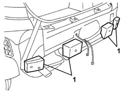
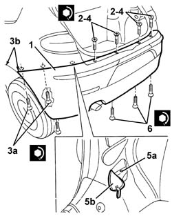

7210E66 R.R. REAR BUMPER
- Path
- Procedures > 72 PANELS AND FRAME > 7210 REMOVING REFITTING > 7210E external parts > 7210E66 R.R. REAR BUMPER
- Kind
- repair procedure (removal / refitting; the operation number is the code)
- Applies to
- all engines; all production periods
- Interactive page
- https://sloeber94.github.io/elrnDB-a147/en/#/3025980
Applies to: all engines; all production periods
 Removing
Removing
 Refitting
Refitting5540A94 l/h or r/h number plate light (one) - r+r (left and right sides)
7055A30 l/h or r/h side rubbing strip (one) - r+r (left and right sides)
7055B43 REAR WHEEL ARCH liner (one), left or right - R.R. (left and right sides)
Open the tailgate.
1. Undo the upper central bumper bolts.
Raise the car at the rear
2. Working from both sides of the car, undo the outer side bumper bolts.
3. Undo the top inner side bolts.
4. Open access flap (4a) and undo bolts (4b).
5. Undo the lower bolts fixing the bumper.
6. Remove the bumper.

Applies to: all engines; all production periods
1. Prise out the buffers if necessary.

Applies to: all engines; all production periods
Refitting
RemovingCheck that the rear bumper is undamaged.
Refit the buffers if they were removed.
1. Fit the bumper.
2. Screw in the upper bumer bolts without tightening.
3. Tighten side bolts (3a), ensuring the bumpers are aligned with the wing at the side (3b).
 | Fastening | Component | Ø | Value (daNm) |
|---|---|---|---|---|
3b | Bolt | FRONT BUMPERS | M6 | 0.75 |
4. Tighten the top central bumper retaining bolts.
| Fastening | Component | Ø | Value (daNm) |
|---|---|---|---|---|
4 | Bolt | FRONT BUMPERS | M6 | 0.75 |
5. Tighten the lower bolts fixing the bumper.
| Fastening | Component | Ø | Value (daNm) |
|---|---|---|---|---|
5 | Bolt | FRONT BUMPERS | M6 | 0.75 |

Applies to: all engines; all production periods
7055B43 REAR WHEEL ARCH liner (one), left or right - R.R. (left and right sides)
5540A94 l/h or r/h number plate light (one) - r+r (left and right sides)
Topics linked from this page (3)
- 5540A94 l/h or r/h number plate light (one) - r+r
- 7055A30 l/h or r/h side rubbing strip (one) - r+r
- 7055B43 REAR WHEEL ARCH liner (one), left or right - R.R.